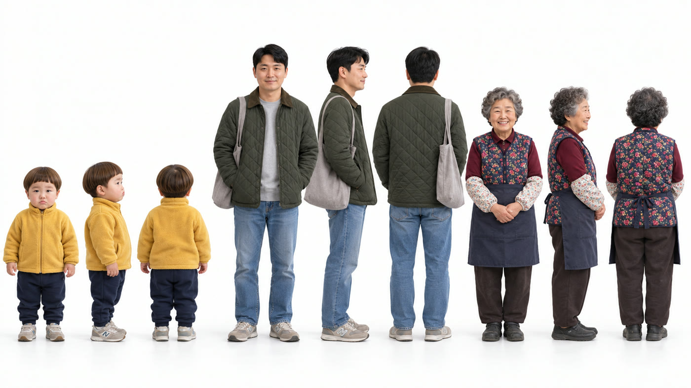
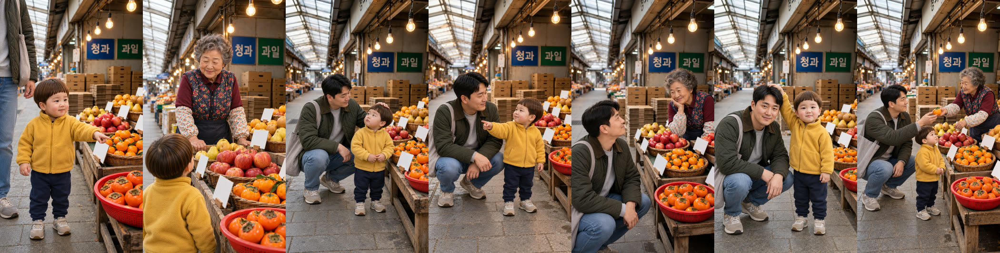
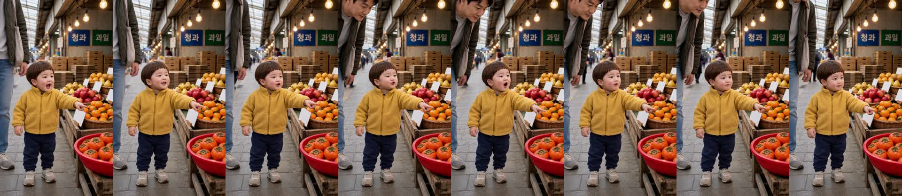
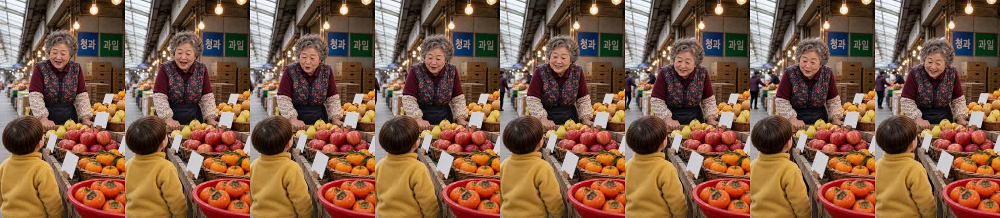
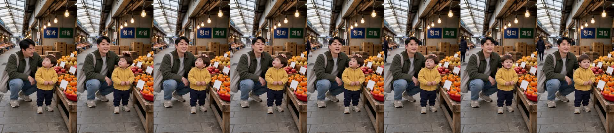
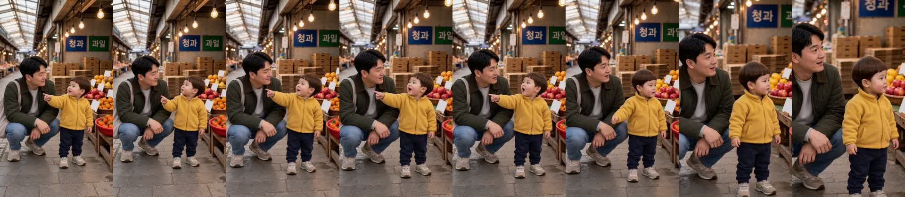
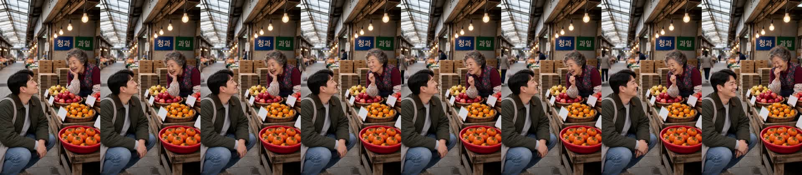
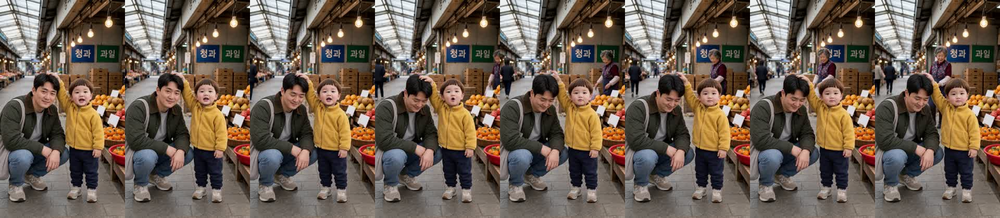
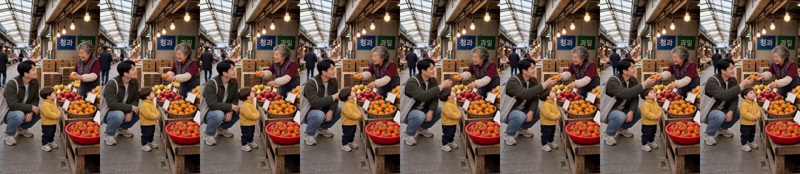

과일가게 «얘는 우리 아빠예요!» 확인
doyoon-fruit-dad-001 · R10 · 22.5초 · 7컷 · D0~D8 통과 · 2026-10-30
흐름
시장 과일가게 앞. 도윤이 «할머니, 귤 주세요!» → 할머니 «아이고, 이 집 아기는 처음 보네~» → 아빠(쪼그려 앉아 머리 쓰다듬으며) «얘는 우리 도윤이예요~» → 도윤이(아빠를 가리키며) «얘는 우리 아빠예요!» → 할머니 웃음 «얘? 아빠가 얘구나~» → 도윤이(아빠 머리를 쓰다듬으며) «얘 착해요!» → 할머니가 아빠에게 귤을 내밀며 «착한 얘도 하나 먹어~».
원작: 82cook «아기 어렸을 때 했던 말» 댓글 120번 — 세 살 아이가 엘리베이터에서 이웃 할머니에게 아빠를 가리키며 «얘는 우리 아빠야». 아빠가 먼저 하는 소개·머리 쓰다듬기·과일가게는 우리 각색.
봐 주셔야 할 것
- 도윤이 음높이는 세 컷 모두 경고선(330Hz) 위입니다(444·410·333Hz). 아기 목소리로 들리는지 들어 주세요.
- 1번 «귤»이 컷 받아쓰기에서는 «줄»로 잡혔습니다(완성본 받아쓰기는 «귤»).
- 6번 컷은 도윤이와 아빠가 앞(할머니 쪽)을 보며 서 있어 카메라를 보는 듯 보일 수 있습니다.
- 뒤 통로에 지나가는 손님이 작게 보이는 컷이 있습니다(6·7번).
썸네일
흰 줄 = 아빠 대사, 노란 줄 = 도윤 대사. 끝 «얘 착해요!»는 숨겼습니다.

제작 중 고친 것
- 시작 그림에서 할머니가 웃을 때 입이 벌어져 두 번 막혔습니다 → 할머니 자세 문장을 «입 다문 작은 미소»로 바꿨습니다(R5).
- 3번 시작 그림에서 도윤이가 대본에 없는 귤을 들고 있어 그 장만 다시 그렸습니다(R6).
- H3: 1번은 카메라가 뒤로 빠지고 6번은 좌우가 뒤집힌 클로즈업이라 한 번씩 다시 뽑았습니다(R8·R9). 이 편 H3 9회.
- 4번 끝에서 화면이 천천히 당겨져 말이 끝난 직후에서 잘랐습니다 · 7번 끝 웃음 꼬리가 기준을 넘어 0.1초 줄였습니다(R10).
- 늦가을이라 진열대 앞 빨간 바구니를 딸기 대신 단감으로 그렸습니다.
컷별 실측
| 컷 | 대사 | 받아쓰기 | 음높이 |
|---|---|---|---|
| 1 도윤 | 할머니, 귤 주세요! | 할머니 줄 주세요 | 444Hz |
| 2 할머니 | 아이고, 이 집 아기는 처음 보네~ | 아이고 이 집 아기는 처음 보네 | 219Hz |
| 3 아빠 | 얘는 우리 도윤이예요~ | 얘는 우리 도윤이에요 | 162Hz |
| 4 도윤 | 얘는 우리 아빠예요! | 얘는 우리 아빠에요 | 410Hz |
| 5 할머니 | 얘? 아빠가 얘구나~ | 예? 아빠가 예구나 | 227Hz |
| 6 도윤 | 얘 착해요! | 예 착해요 | 333Hz |
| 7 할머니 | 착한 얘도 하나 먹어~ | 착한 얘도 하나 먹어 | 276Hz |
완성본 받아쓰기: «할머니, 귤 주세요. 아이고, 이 집 아기는 처음 보네. 얘는 우리 도윤이에요. 얘는 우리 아빠예요. 얘? 아빠가 얘구나. 얘 착해요. 착한 얘도 하나 먹어.»
인물 시트 · 시작 그림


컷 프레임






